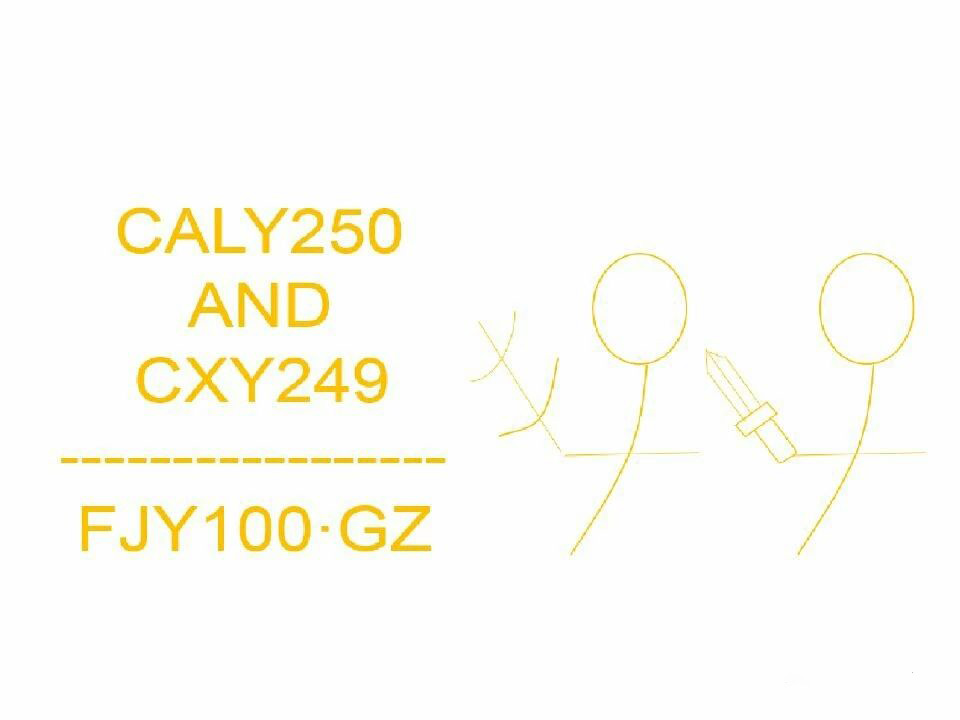

吃瓜市年历对照表
空白1年 1939年
空白2年 1940年
空白3年 1941年
空白4年 1942年
建国1年 1943年
建国2年 1944年
建国3年 1945年
建国4年 1946年
建国5年 1947年
建国6年 1948年
建国7年 1949年
建国8年 1950年
建国9年 1951年
建国10年 1952年
建国11年 1953年
建国12年 1954年
建国13年 1955年
建国14年 1956年
建国15年 1957年
建国16年 1958年
建国17年 1959年
建国18年 1960年
建国19年 1961年
建国20年 1962年
建国21年 1963年
建国22年 1964年
建国23年 1965年
建国24年 1966年
建国25年 1967年
建国26年 1968年
建国27年 1969年
建国28年 1970年
建国29年 1971年
建国30年 1972年
建国31年 1973年
建国32年 1974年
建国33年 1975年
建国34年 1976年
建国35年 1977年
建国36年 1978年
积德1年 1979年
积德2年 1980年
积德3年 1981年
积德4年 1982年
积德5年 1983年
积德6年 1984年
积德7年 1985年
积德8年 1986年
积德9年 1987年
积德10年 1988年
积德11年 1989年
积德12年 1990年
积德13年 1991年
积德14年 1992年
积德15年 1993年
积德16年 1994年
积德17年 1995年
积德18年 1996年
积德19年 1997年
积德20年 1998年
积德21年 1999年
积德22年 2000年
积德23年 2001年
积德24年 2002年
积德25年 2003年
积德26年 2004年
积德27年 2005年
积德28年 2006年
积德29年 2007年
积德30年 2008年
积德31年 2009年
积德32年 2010年
积德33年 2011年
积德34年 2012年
积德35年 2013年
积德36年 2014年
吃瓜1年 2015年
吃瓜2年 2016年
吃瓜3年 2017年
吃瓜4年 2018年
吃瓜5年 2019年
吃瓜6年 2020年
吃瓜7年 2021年
吃瓜8年 2022年
吃瓜9年 2023年
吃瓜10年 2024年
吃瓜11年 2025年
吃瓜12年 2026年
吃瓜13年 2027年
吃瓜14年 2028年
吃瓜15年 2029年
吃瓜16年 2030年
吃瓜17年 2031年
吃瓜18年 2032年
吃瓜19年 2033年
吃瓜20年 2034年
吃瓜21年 2035年
吃瓜22年 2036年
吃瓜23年 2037年
吃瓜24年 2038年
吃瓜25年 2039年
吃瓜26年 2040年
吃瓜27年 2041年
吃瓜28年 2042年
吃瓜29年 2043年
吃瓜30年 2044年
吃瓜31年 2045年
吃瓜32年 2046年
吃瓜33年 2047年
吃瓜34年 2048年
吃瓜35年 2049年
吃瓜36年 2050年
